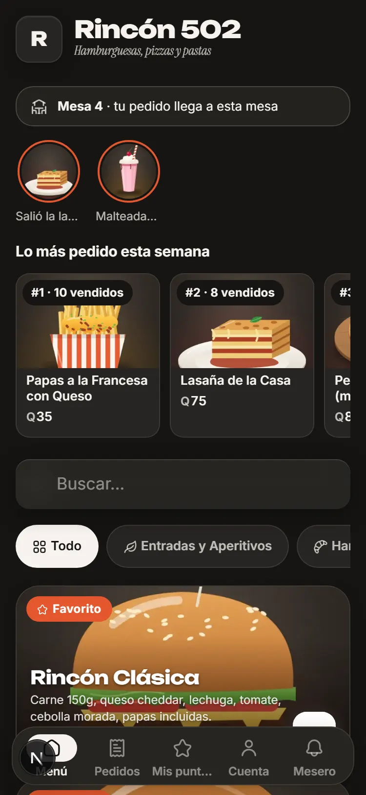
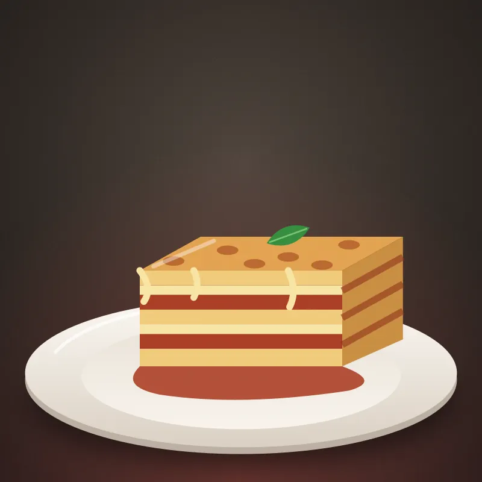
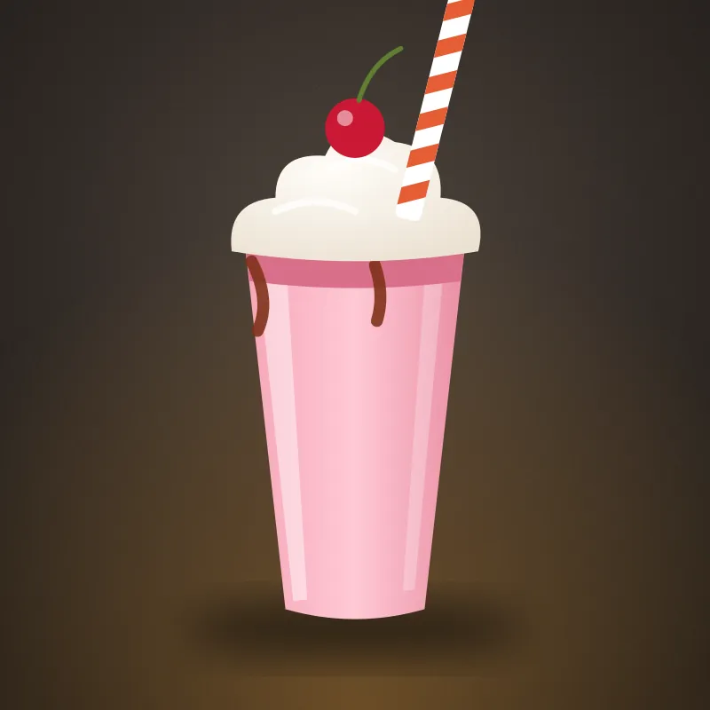
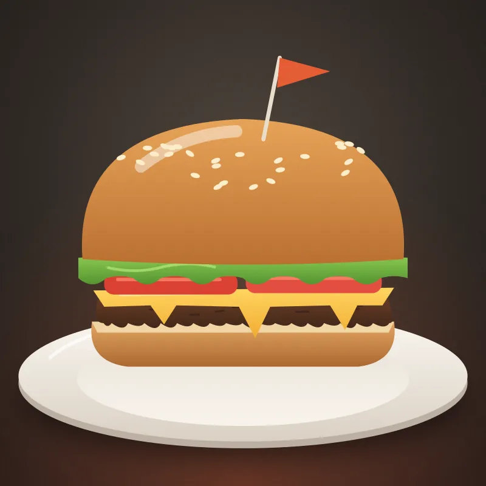
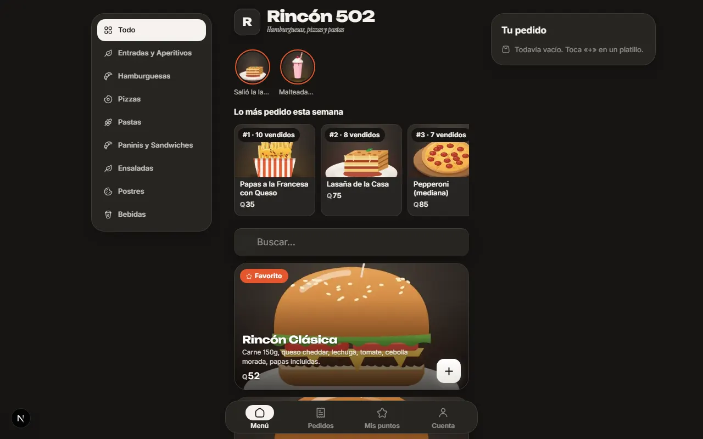

Carta · fase 4
Ordenar la entrada y cerrar lo que quedó pendiente de «La carta que vende». Datos y dibujos de la demo Rincón 502 con la paleta Carbón de autor. El «antes» es la carta real de hoy. En el teléfono de la propuesta, toca la lupa.
1 · La entrada: de cinco capas a tres
Hoy, con QR de mesa, antes del primer platillo de la carta se apilan la cabecera, la franja «Mesa 4», los estados, «Lo más pedido» (≈190 px), el buscador y las píldoras. Cada pieza sirve, pero juntas repiten el problema de la portada. La propuesta mete la mesa en la cabecera, baja «Lo más pedido» a una fila de 80 px y pone la lupa al principio de las píldoras.


Salió la lasaña
Malteadas 2×Q45
Carne 150 g, queso cheddar, lechuga y tomate. Con papas.
Q52
Doble carne, doble queso y tocino crocante.
Q68Lo que cambia: «Mesa 4» es una etiqueta en la cabecera y abre el pedido de la mesa cuando está encendido. «Lo más pedido» queda en una fila de 80 px, con foto, nombre, ventas y precio. La lupa es la primera píldora: al tocarla, la fila se vuelve el campo de búsqueda con los antojos, y «✕» la cierra. En Pizarra y Kiosco, que no tienen fila de píldoras, el campo se queda como está.
2 · En la computadora: sin barra de teléfono
Hoy la PC ya tiene el riel de categorías y «Tu pedido», pero abajo al centro sigue la barra del teléfono. La propuesta pasa Pedidos, Mis puntos, Cuenta y Mesero al pie del riel, y la barra desaparece en PC. La carta conserva su ancho: el dueño rechazó ensancharla (2026-08-13).

Carne 150 g, queso cheddar, lechuga y tomate. Con papas.
Q52Lo que cambia: en PC no hay barra abajo. El riel lleva las categorías arriba y, debajo de una línea, Pedidos, Mis puntos, Cuenta y Mesero (este solo con mesa escaneada). En el teléfono todo sigue como en la sección 1.
3 · El pedido de la mesa: cuánto le toca a cada quien
Hoy la lista compartida ya agrupa lo de cada persona, pero no dice cuánto le toca pagar. Es la idea «Al centro» de la auditoría de ChatGPT y estaba en la maqueta aprobada. Un control de dos posiciones cambia entre «Por persona» y «Partes iguales». Es solo información: la cuenta se cobra como siempre en caja.
Pedido de la Mesa 4
3 personas · se manda a cocina una sola vez
Por qué: en la mesa alguien siempre saca la calculadora. Con la cuenta a la vista, cada uno sabe lo suyo antes de pedir y nadie dicta por los demás.
Qué no hace: no cobra por separado, no divide en caja y no promete propina ni cargos. Los montos son de la carta; el total final lo da la caja.
4 · El dueño: estructura según su carta, descripción y foto
Tomado de ChatGPT: la estructura debe elegirse según la carta del negocio, y una línea que diga qué lleva vende más que «delicioso». Sin IA.
Estructura de la carta
Tu carta tiene 38 platillos y 12 con foto.
Platillo · Rincón Clásica
Di qué lleva, cuánto es y con qué viene. «Carne 150 g, con papas» ayuda a decidir más que «deliciosa».
El recuadro es lo que entra en la tarjeta de tu estructura. Si el platillo queda cortado, toma la foto más de lejos.
5 · Lo demás, sin cambio de forma
- Ficha: deslizar hacia abajo la cierra, y el total cuenta al cambiar una opción (200 ms; nada con «reducir movimiento»). Ya estaba en la maqueta aprobada.
- Agotado: la ficha dice por qué y ofrece «Ver más de Hamburguesas».
- Enlace legible:
?platillo=doble-bacon. El enlace con el código sigue sirviendo. - Vista previa general: nombre, paleta y la foto del platillo más pedido.
- Pizarra: se pueden abrir varias secciones a la vez.
- Estantes: el borde de la repisa se desvanece para decir que sigue. Una sección larga dibuja 8 y termina en «Ver los 24».
- Clásico: el texto de los destacados va debajo de la foto, no encima. Carta de autor: el precio en tinta completa.